27 Correlation
How two or more variables move together: scatter plots, heatmaps, correlograms, bubble charts, connected scatter plots, 2D densities, functions of two variables and the ways out of overplotting (the R Graph Gallery correlation pages and data-to-viz).
Not here: labels along a trend line and label repel, clustered heatmap order with dendrograms (waits for hierarchical clustering in fastmath), arrows on connected scatter plots (backlog), 3D densities and interactivity.
(ns use-cases.correlation
(:require [fastmath.core :as m]
[fastmath.random :as r]
[fastmath.stats :as stats]
[cljplot2.chart :as chart]
[cljplot2.core :as plot]
[notebook-utils :as nu])
(:import [java.time DayOfWeek LocalDate]
[java.time.temporal IsoFields]))(def houses (nu/dataset :house-prices))(def iris (nu/dataset :iris))(def mtcars (nu/dataset :mtcars))(def faithful (nu/dataset :faithful))(def gapminder (nu/dataset :gapminder-2007))(def countries (nu/dataset :countries))(def diamonds (nu/dataset :diamonds))(def economics (mapv #(update % :date (fn [d] (LocalDate/parse d))) (nu/dataset :economics)))(def bitcoin (mapv #(update % :date (fn [d] (LocalDate/parse d))) (nu/dataset :bitcoin)))(def indicators
"The countries' rate indicators (per person, comparable across countries)."
[:birth-rate :mortality-rate :life-expectancy :infant-mortality :children-per-woman :growth-rate])(defn- z-scores
"Long rows `{:country :indicator :value :z}` of `rows` - each indicator standardized over `rows`."
[rows]
(let [moments (into {} (for [k indicators :let [vs (map k rows)]] [k [(stats/mean vs) (stats/stddev vs)]]))]
(vec (for [row rows k indicators :let [[mu sd] (moments k)]]
{:country (:country row) :continent (:continent row) :indicator (name k)
:value (k row) :z (/ (- (double (k row)) (double mu)) (double sd))}))))#'use-cases.correlation/z-scores27.1 Scatter
One point per observation at its two values; colour, shape and size carry more variables.
27.1.1 Basic scatter, styled points
Living area against sale price of 1460 houses: the default points, then a translucent fill with an outline and another shape.
Source: R Graph Gallery - Basic scatterplot with ggplot2; data-to-viz - Scatter (1, 2). Data: House prices: living area and sale price, data-to-viz example dataset 2_TwoNum (Yan Holtz; Kaggle House Prices competition); licence: MIT (data_to_viz repository).
(plot/render-image
(plot/arrange
[{:data houses :mapping {:x :living-area :y :price} :charts [(chart/scatter)]
:labels {:title "default" :x "living area, sq ft" :y "price, USD"}}
{:data houses :mapping {:x :living-area :y :price}
:charts [(chart/scatter {:shape \A :size 6 :color [70 130 180 90] :stroke-color [20 60 100] :stroke-width 0.5})]
:labels {:title "translucent triangles with outlines" :x "living area, sq ft" :y nil}}]
{:columns 2})
{:width 1000 :height 450})
27.1.2 Colour and shape by group
Mapping :color and :shape to the same variable gives every species its colour and shape, and one legend.
Source: R Graph Gallery - Map a variable to a ggplot2 scatterplot. Data: Edgar Anderson’s iris measurements, R datasets package iris (Anderson 1935; Fisher 1936); licence: Part of R (GPL-2 | GPL-3).
(plot/render-image
{:data iris :mapping {:x :sepal-length :y :sepal-width :color :species :shape :species}
:charts [(chart/scatter {:size 7})]
:labels {:title "Iris sepals by species" :x "sepal length, cm" :y "sepal width, cm"}}
{:width 700 :height 500})
27.1.3 Text labels in boxes
A text chart names some cars; :background puts each label on a semi-transparent box, so the points it covers stay visible and the text stays readable over them.
Source: R Graph Gallery - Add text labels with ggplot2. Data: Motor Trend car road tests (1974), R datasets package mtcars (Henderson & Velleman 1981); licence: Part of R (GPL-2 | GPL-3).
(let [label-box {:size 9 :background [255 255 255 200] :padding 2 :mapping {:x :wt :y :mpg :label :model}}]
(plot/render-image
{:data mtcars :mapping {:x :wt :y :mpg}
:charts [(chart/scatter {:size 8 :color [200 60 40]})
(chart/text (merge label-box {:data (filterv #(> (double (:mpg %)) 31.0) mtcars)
:anchor [:left :middle] :offset [6 0]}))
(chart/text (merge label-box {:data (filterv #(or (> (double (:wt %)) 5.3) (> (double (:hp %)) 250.0)) mtcars)
:anchor [:right :middle] :offset [-6 0]}))]
:labels {:title "Cars by weight and fuel use" :x "weight, 1000 lbs" :y "miles per gallon"}}
{:width 750 :height 500}))
27.1.4 Rugs and marginal distributions
Margins share the panel’s axes: rugs (one line per value) beside both axes, or the densities of both variables.
Source: R Graph Gallery - Marginal distribution with ggplot2. Data: Old Faithful geyser eruptions, R datasets package faithful (Härdle 1991; Azzalini & Bowman 1990); licence: Part of R (GPL-2 | GPL-3).
(plot/render-image
{:data faithful :mapping {:x :eruptions :y :waiting} :charts [(chart/scatter {:size 4})]
:margins {:top {:charts (chart/rug) :size 25} :right {:charts (chart/rug) :size 25}}
:labels {:title "Old Faithful with rugs" :x "eruption, min" :y "waiting, min"}}
{:width 650 :height 480})
(plot/render-image
{:data faithful :mapping {:x :eruptions :y :waiting} :charts [(chart/scatter {:size 4})]
:margins {:top (chart/density {:fill [70 130 180 120]}) :right (chart/density {:fill [70 130 180 120]})}
:labels {:title "Old Faithful with marginal densities" :x "eruption, min" :y "waiting, min"}}
{:width 650 :height 520})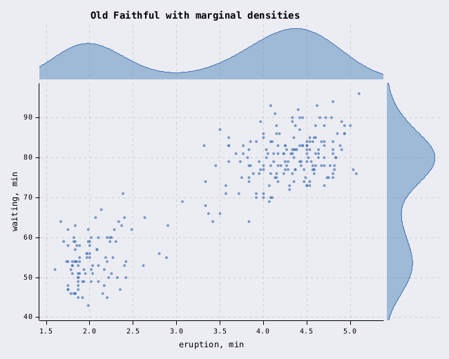
27.1.5 Linear fit with a confidence band
chart/smooth {:method :lm} adds the least-squares line and its 95 % confidence band.
Source: R Graph Gallery - Scatterplot with a regression line. Data: House prices: living area and sale price, data-to-viz example dataset 2_TwoNum (Yan Holtz; Kaggle House Prices competition); licence: MIT (data_to_viz repository).
(plot/render-image
{:data houses :mapping {:x :living-area :y :price}
:charts [(chart/scatter {:size 3 :color [0 0 0 70]}) (chart/smooth {:method :lm})]
:labels {:title "Price grows with living area" :x "living area, sq ft" :y "price, USD"}}
{:width 700 :height 480})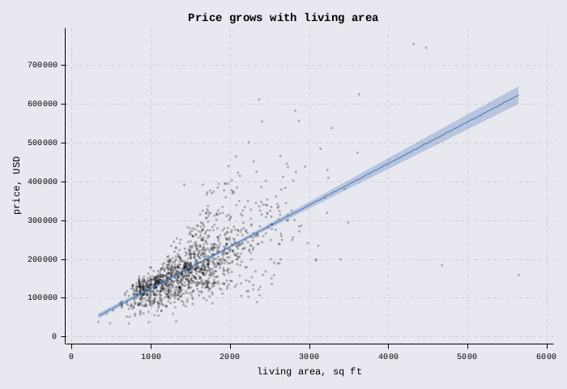
27.1.6 A scatter per group
A facet mapping draws one panel per species on shared scales.
Source: R Graph Gallery - Faceting with ggplot2. Data: Edgar Anderson’s iris measurements, R datasets package iris (Anderson 1935; Fisher 1936); licence: Part of R (GPL-2 | GPL-3).
(plot/render-image
{:data iris :mapping {:x :sepal-length :y :sepal-width :facet :species}
:charts [(chart/scatter {:size 5})]
:labels {:title "Iris sepals, a panel per species" :x "sepal length, cm" :y "sepal width, cm"}}
{:width 1000 :height 400})
27.1.7 Size by overlap count
Integer data puts many cars on one point; counting the cars per point and mapping the count to the point’s area (:area true on the size scale) shows how many sit there.
Source: R Graph Gallery - Scatterplot. Data: Motor Trend car road tests (1974), R datasets package mtcars (Henderson & Velleman 1981); licence: Part of R (GPL-2 | GPL-3).
(let [counts (mapv (fn [[[cyl gear] cars]] {:cyl cyl :gear gear :cars (count cars)})
(group-by (juxt :cyl :gear) mtcars))]
(plot/render-image
{:data counts :mapping {:x :cyl :y :gear :size :cars}
:charts [(chart/scatter {:color [70 130 180 200]})]
:scales {:size {:area true :range [4 36] :title "cars"}}
:labels {:title "Cars per cylinder and gear count" :x "cylinders" :y "forward gears"}}
{:width 650 :height 450}))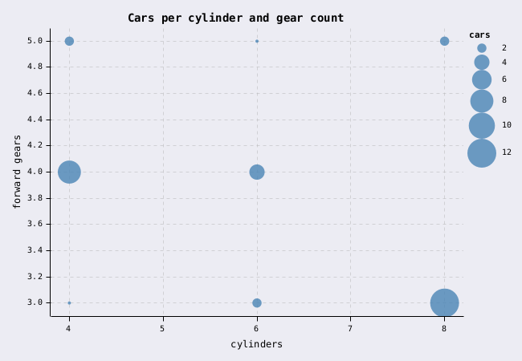
27.1.8 Manhattan plot
A genome-wide association plot (seeded data): one point per marker at its position along the chromosomes and its −log10 p-value, chromosomes in alternating colours and numbered at their centres (explicit :ticks with a :formatter), the significance threshold 5·10⁻⁸ as a rule.
Source: R Graph Gallery - Manhattan plot.
(def markers
"Seeded association results: 22 chromosomes of 200-400 markers, uniform p-values with three peaks."
(let [rng (r/rng :mersenne 101)
peaks {3 0.4 9 0.7 16 0.3}]
(loop [chromosome 1 offset 0.0 rows []]
(if (> chromosome 22)
rows
(let [n (r/irandom rng 200 400)
chromosome-rows (for [i (range n)
:let [t (/ (double i) n)
peak (get peaks chromosome)
strength (if peak (* 9.0 (m/exp (- (m/sq (/ (- t peak) 0.03))))) 0.0)
p (* (r/drandom rng) (m/pow 10.0 (- strength)))]]
{:chromosome chromosome :position (+ offset i) :log-p (- (m/log10 (max p 1.0e-12)))})]
(recur (inc chromosome) (+ offset n) (into rows chromosome-rows)))))))(let [centres (into (sorted-map) (for [[chromosome rows] (group-by :chromosome markers)]
[(stats/mean (map :position rows)) chromosome]))]
(plot/render-image
{:data markers :mapping {:x :position :y :log-p :color #(if (odd? (:chromosome %)) "odd" "even")}
:charts [(chart/scatter {:size 3})
(chart/rule {:y (- (m/log10 5.0e-8)) :dash :dashed :color [200 40 40]})]
:scales {:x {:ticks (vec (keys centres)) :formatter #(str (get centres (double %)))}
:color {:range {"odd" [40 70 120] "even" [140 170 210]} :legend false}}
:theme {:panel {:grid {:x :none}}}
:labels {:title "Association with a trait along 22 chromosomes" :x "chromosome" :y "-log10 p"}}
{:width 1000 :height 400}))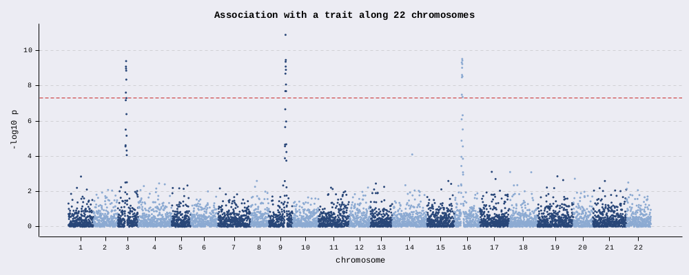
27.1.9 Simpson’s paradox
Three groups (seeded): within each group y grows with x, across all of them it falls. One fit for everything points the wrong way; a fit per group shows the relation inside the groups.
Source: data-to-viz - Simpson’s paradox.
(def simpson
(let [rng (r/rng :mersenne 33)]
(vec (for [[g cx cy] [["A" 2.0 9.0] ["B" 5.0 6.0] ["C" 8.0 3.0]]
_ (range 40)
:let [dx (r/grandom rng 0.0 1.0)]]
{:group g :x (+ cx dx) :y (+ cy (* 0.8 dx) (r/grandom rng 0.0 0.5))}))))(plot/render-image
(plot/arrange
[{:data simpson :mapping {:x :x :y :y}
:charts [(chart/scatter {:size 5 :color [90 90 90]}) (chart/smooth {:method :lm})]
:labels {:title "one fit: y falls with x"}}
{:data simpson :mapping {:x :x :y :y :color :group}
:charts [(chart/scatter {:size 5}) (chart/smooth {:method :lm})]
:theme {:palette {:color :set1}}
:labels {:title "a fit per group: y grows with x" :y nil}}]
{:columns 2})
{:width 1000 :height 430})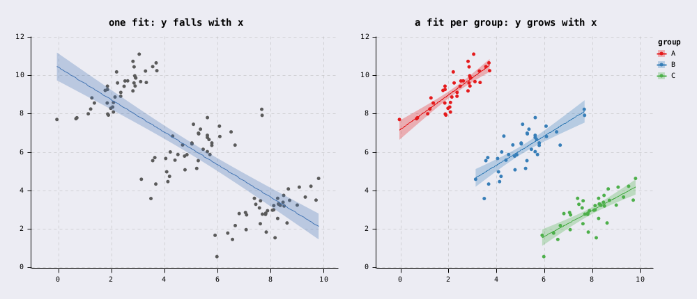
27.2 Heatmap
A grid of cells coloured by a value: rows and columns are categories (or binned numbers).
27.2.1 Basic heatmap, square and hexagon cells
European countries × demographic indicators, each indicator standardized (z-score) so the colours compare across columns of different units; :cell :pointy-hex draws the same grid as a honeycomb.
(def europe (filterv #(= "Europe" (:continent %)) countries))Source: R Graph Gallery - Heatmap; data-to-viz - Heatmap (1, 2). Data: Countries: demographic indicators, data-to-viz example dataset multivariate (Yan Holtz; original source not documented); licence: MIT (data_to_viz repository).
(let [rows (z-scores europe)
heatmap (fn [cell title legend?]
{:data rows :mapping {:x :country :y :indicator :color :z} :legend legend?
:scales {:color {:range :RColorBrewer/RdBu :midpoint 0 :reverse true :title "z-score"}}
:theme {:axis {:x {:label-rotation 90}}}
:charts [(chart/tile {:cell cell})]
:labels {:title title :x nil :y nil}})]
(plot/render-image
(plot/arrange [(heatmap :square "square cells" false) (heatmap :pointy-hex "pointy-hex cells" true)]
{:columns 1})
{:width 1000 :height 800}))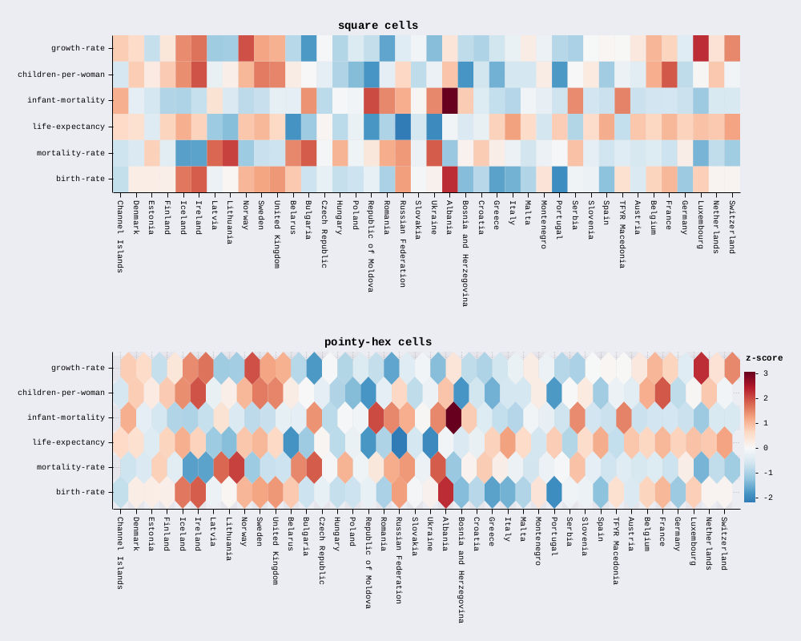
27.2.2 Palettes, normalized columns
Raw values put every indicator on one colour scale, so life expectancy (around 80) drowns the rates (0-20); standardizing each column first gives every indicator the full palette. Any palette or gradient works: viridis on the left, a diverging RdBu around 0 on the right.
Source: R Graph Gallery - Heatmap with the levelplot function. Data: Countries: demographic indicators, data-to-viz example dataset multivariate (Yan Holtz; original source not documented); licence: MIT (data_to_viz repository).
(let [rows (z-scores (take 25 europe))
base {:data rows :theme {:axis {:x {:label-rotation 90}}} :labels {:x nil :y nil}}]
(plot/render-image
(plot/arrange
[(merge base {:mapping {:x :country :y :indicator :color :value} :charts [(chart/tile)]
:scales {:color {:range :viridis :title "value"}}
:labels {:title "raw values (viridis)" :x nil :y nil}})
(merge base {:mapping {:x :country :y :indicator :color :z} :charts [(chart/tile)]
:scales {:color {:range :RColorBrewer/RdBu :midpoint 0 :reverse true :title "z-score"}}
:labels {:title "standardized per indicator (RdBu)" :x nil :y nil}})]
{:columns 2})
{:width 1000 :height 520}))
27.2.3 Side colour bar
A category of the columns as a one-row tile above the heatmap: both plots share the column order (:domain), plot/arrange aligns the cells. Here: up to six of the most populous countries of each continent (the dataset has two in North America), grouped by continent.
Source: R Graph Gallery - The heatmap function (side colours). Data: Countries: demographic indicators, data-to-viz example dataset multivariate (Yan Holtz; original source not documented); licence: MIT (data_to_viz repository).
(let [picked (vec (mapcat (fn [[_ rows]] (take 6 (sort-by #(- (double (:pop %))) rows)))
(sort-by key (group-by :continent countries))))
order (mapv :country picked)]
(plot/render-image
(plot/arrange
[{:data picked :mapping {:x :country :y (constantly "continent") :color :continent}
:scales {:x {:domain order :axis false} :color {:title "continent"}}
:charts [(chart/tile {:stroke-color :white})]
:labels {:title "Indicators of the largest countries per continent" :x nil :y nil}}
{:data (z-scores picked) :mapping {:x :country :y :indicator :color :z}
:scales {:x {:domain order} :color {:range :RColorBrewer/RdBu :midpoint 0 :reverse true :title "z-score"}}
:theme {:axis {:x {:label-rotation 90}}}
:charts [(chart/tile {:stroke-color :white})]
:labels {:x nil :y nil}}]
{:columns 1 :heights [1 6]})
{:width 1000 :height 600}))
27.2.4 Values in cells: the correlation matrix
fastmath.stats/correlation-matrix gives r of every pair of variables; one tile per pair, coloured on a diverging scale over [-1 1] and labelled with its value (:value-label, text in a contrasting colour).
Source: R Graph Gallery - Correlation matrix with ggally (heatmap). Data: Motor Trend car road tests (1974), R datasets package mtcars (Henderson & Velleman 1981); licence: Part of R (GPL-2 | GPL-3).
(let [variables [:mpg :cyl :disp :hp :drat :wt :qsec :gear :carb]
names (mapv name variables)
r (stats/correlation-matrix (mapv (fn [k] (mapv k mtcars)) variables))]
(plot/render-image
{:data (vec (for [i (range (count names)) j (range (count names))]
{:x (names i) :y (names j) :r (nth (nth r i) j)}))
:mapping {:x :x :y :y :color :r}
:scales {:y {:domain (vec (reverse names))} :color {:range :RColorBrewer/RdBu :domain [-1 1] :title "r"}}
:charts [(chart/tile {:stroke-color :white :value-label (fn [{:keys [value]}] (format "%.2f" (double value)))})]
:labels {:title "mtcars: correlation of every pair" :x nil :y nil}}
{:width 700 :height 600}))
27.2.5 Calendar heatmap
Daily bitcoin price changes on a calendar: ISO week across, weekday down, a row of panels per year; the colour is the day’s change, capped at ±10 % so a few extreme days don’t flatten the rest.
Source: R Graph Gallery - The hourly heatmap (calendar layout). Data: Bitcoin daily price, 2013-2018, data-to-viz example dataset 3_TwoNumOrdered (Yan Holtz; CoinMarketCap via JesseVent/crypto); licence: MIT (data_to_viz repository).
(let [weekdays ["Mon" "Tue" "Wed" "Thu" "Fri" "Sat" "Sun"]
days (vec (for [[prev day] (partition 2 1 bitcoin)
:let [^LocalDate d (:date day)]]
{:week (.get d IsoFields/WEEK_OF_WEEK_BASED_YEAR)
:year (.get d IsoFields/WEEK_BASED_YEAR)
:weekday (weekdays (dec (.getValue ^DayOfWeek (.getDayOfWeek d))))
:change (m/constrain (- (/ (double (:value day)) (double (:value prev))) 1.0) -0.1 0.1)}))]
(plot/render-image
{:data days :mapping {:x :week :y :weekday :color :change :facet-row :year}
:scales {:y {:domain (vec (reverse weekdays))}
:color {:range :RColorBrewer/RdYlGn :midpoint 0 :domain [-0.1 0.1] :title "daily change"
:formatter #(format "%+.0f%%" (* 100.0 (double %)))}}
:charts [(chart/tile {:stroke-color :white})]
:labels {:title "Bitcoin: daily price change, 2013-2018" :x "ISO week" :y nil}}
{:width 1000 :height 800}))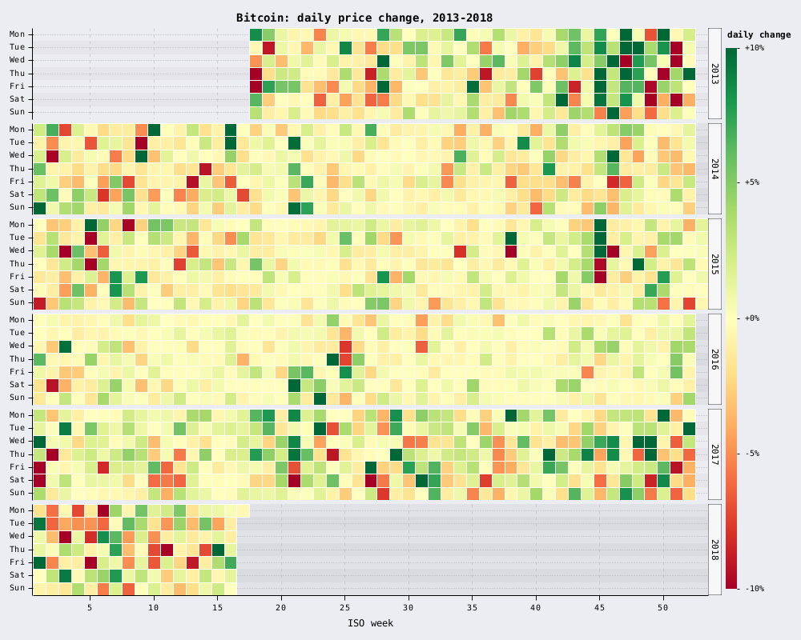
27.2.6 Row and column order
The order of the categories is the scale’s :domain: the data order (the default; here the dataset’s subregions) hides structure that a meaningful order shows - countries sorted by life expectancy.
Source: R Graph Gallery - Heatmap. Data: Countries: demographic indicators, data-to-viz example dataset multivariate (Yan Holtz; original source not documented); licence: MIT (data_to_viz repository).
(let [rows (z-scores europe)
by-life (mapv :country (sort-by :life-expectancy europe))
heatmap (fn [order title legend?]
{:data rows :mapping {:x :country :y :indicator :color :z} :legend legend?
:scales (cond-> {:color {:range :RColorBrewer/RdBu :midpoint 0 :reverse true :title "z-score"}}
order (assoc :x {:domain order}))
:theme {:axis {:x {:label-rotation 90}}}
:charts [(chart/tile)]
:labels {:title title :x nil :y nil}})]
(plot/render-image
(plot/arrange [(heatmap nil "data order" false) (heatmap by-life "by life expectancy" true)] {:columns 1})
{:width 1000 :height 800}))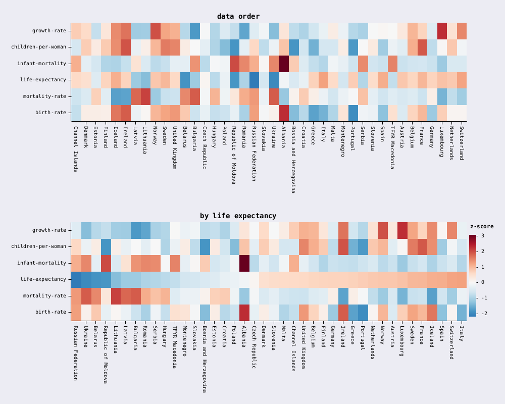
27.2.7 Smoothed heatmap
Measurements on a coarse lattice (seeded: two bumps and noise) as tiles, and the same values interpolated bicubically into a smooth field with contour lines.
Source: R Graph Gallery - 2D density chart (raster smoothing).
(def lattice
(let [rng (r/rng :mersenne 21)]
(vec (for [x (range 12) y (range 9)]
{:x x :y y :z (+ (* 8 (m/exp (- (/ (+ (m/sq (- x 3)) (m/sq (- y 6))) 6.0))))
(* 5 (m/exp (- (/ (+ (m/sq (- x 8)) (m/sq (- y 2))) 8.0))))
(* 0.6 (r/drandom rng)))}))))(plot/render-image
(plot/arrange
[{:data lattice :mapping {:x :x :y :y :color :z} :charts [(chart/tile)] :legend false
:labels {:title "measured lattice"}}
{:data lattice :mapping {:x :x :y :y :value :z}
:charts [(chart/field {:interpolation :bicubic}) (chart/contour {:interpolation :bicubic :color [0 0 0 120]})]
:labels {:title "bicubic field and contours" :y nil}}]
{:columns 2})
{:width 1000 :height 430})
27.3 Correlogram
All pairs of several variables at once: plot/pairs lays out a matrix of cells sharing the variables’ scales.
27.3.1 Scatter-plot matrix by group
Scatter plots below the diagonal, densities on it, the correlation per species above it, coloured by species.
Source: R Graph Gallery - Correlogram; data-to-viz - Correlogram (1, 2). Data: Edgar Anderson’s iris measurements, R datasets package iris (Anderson 1935; Fisher 1936); licence: Part of R (GPL-2 | GPL-3).
(plot/render-image
(plot/pairs iris {:variables [:sepal-length :sepal-width :petal-length :petal-width] :mapping {:color :species}
:theme {:palette {:color :set1}} :title "Iris measurements by species"})
{:width 950 :height 800})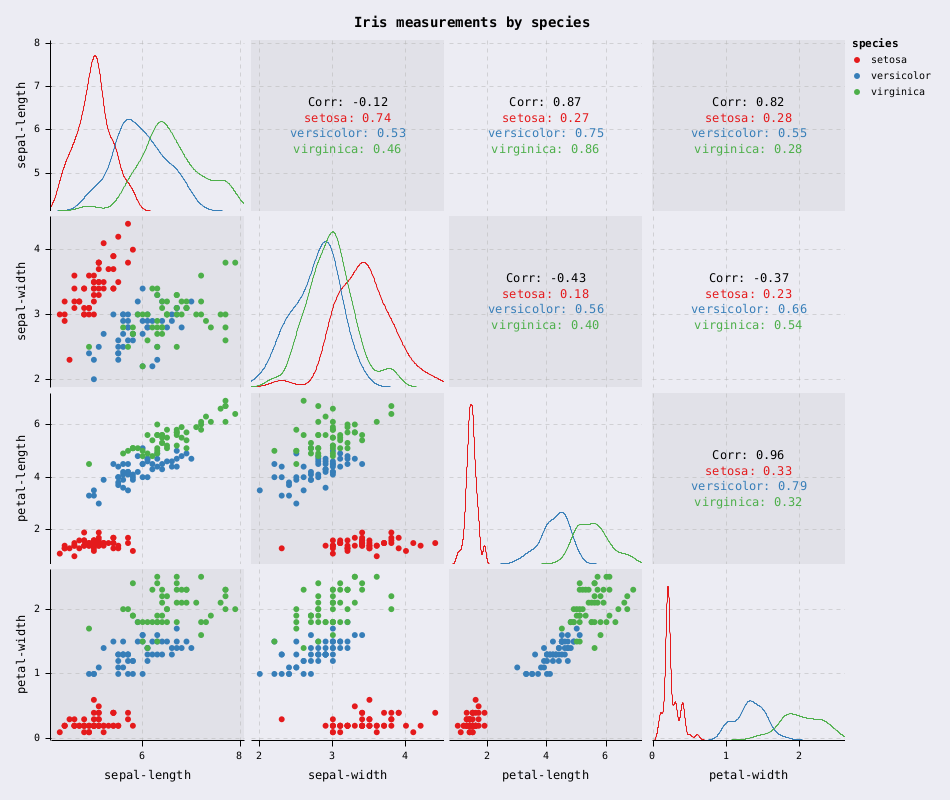
27.3.2 Correlation glyphs
chart/correlation draws r of its cell as a glyph: ellipses (the shape of a bivariate normal with that r) below, pies (|r| as a filled angle) above, the variable names on the diagonal; the r colour bar on the side.
Source: R Graph Gallery - Correlation ellipses. Data: Motor Trend car road tests (1974), R datasets package mtcars (Henderson & Velleman 1981); licence: Part of R (GPL-2 | GPL-3).
(plot/render-image
(plot/pairs mtcars {:variables [:mpg :disp :hp :drat :wt :qsec]
:lower (chart/correlation {:glyph :ellipse}) :upper (chart/correlation {:glyph :pie})
:diagonal :names :title "mtcars correlogram"})
{:width 800 :height 750})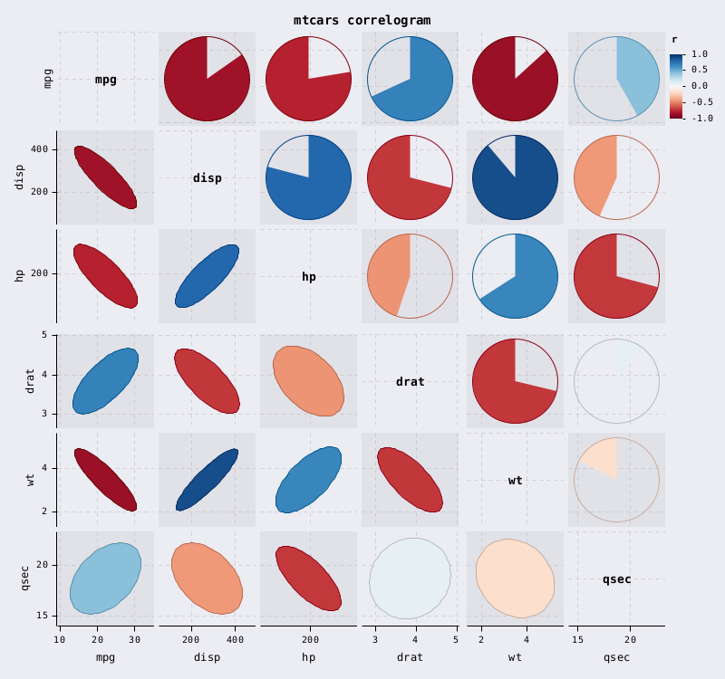
27.4 Bubble
A scatter plot with a third variable as the point’s size - by area, so a point twice the value has twice the ink.
27.4.1 Bubble chart: area, size range, colours and legend
Gapminder 2007: income (log axis) against life expectancy, population as the bubble’s area (:area true, size range 1-40 px), continent as colour. The left panel maps population linearly to the diameter: large countries look far larger than they are.
Source: R Graph Gallery - Bubble chart; data-to-viz - Bubble (1, 2). Data: Gapminder 2007: life expectancy, population and GDP per capita, data-to-viz example dataset 4_ThreeNum (Yan Holtz; Gapminder via the R gapminder package); licence: MIT (data_to_viz repository).
(let [bubbles (fn [area? title legend?]
{:data (sort-by #(- (double (:pop %))) gapminder) :legend legend?
:mapping {:x :gdp-per-cap :y :life-exp :size #(/ (double (:pop %)) 1.0e6) :color :continent}
:scales {:x {:kind :log} :size (cond-> {:range [1 40] :title "population, M"} area? (assoc :area true))}
:charts [(chart/scatter {:stroke-color :white :stroke-width 0.5})]
:theme {:palette {:color :set2}}
:labels {:title title :x "GDP per capita, USD" :y "life expectancy, years"}})]
(plot/render-image
(plot/arrange [(bubbles false "diameter linear in population" false) (bubbles true "area linear in population" true)]
{:columns 2 :widths [1 1.25]})
{:width 1000 :height 480}))
27.5 Connected scatter
Two variables over time: the points in time order joined by a path, dates written next to some of them.
27.5.1 Connected scatter with dates
Yearly means of US unemployment duration and savings rate, 1990-2014; labels on boxes keep the years readable where the path crosses itself.
Source: R Graph Gallery - Connected scatterplot with ggplot2; data-to-viz - Connected scatter (1, 2). Data: US economic time series, 1967-2015, R ggplot2 package economics (Federal Reserve Bank of St. Louis, FRED); licence: MIT (ggplot2).
(let [yearly (vec (for [[year rows] (sort-by key (group-by #(.getYear ^LocalDate (:date %)) economics))
:when (<= 1990 year 2014)]
{:year year :uempmed (stats/mean (map :uempmed rows)) :psavert (stats/mean (map :psavert rows))}))]
(plot/render-image
{:data yearly :mapping {:x :uempmed :y :psavert}
:charts [(chart/line {:sort false :curve :bezier :color [33 102 172]})
(chart/scatter {:size 6 :color [33 102 172]})
(chart/text {:data (filterv #(zero? (mod (long (:year %)) 4)) yearly)
:mapping {:x :uempmed :y :psavert :label :year}
:background [255 255 255 210] :padding 2 :anchor [:left :bottom] :offset [5 5]})]
:labels {:title "Unemployment duration vs savings rate, 1990-2014" :x "median unemployment, weeks" :y "savings rate, %"}}
{:width 800 :height 550}))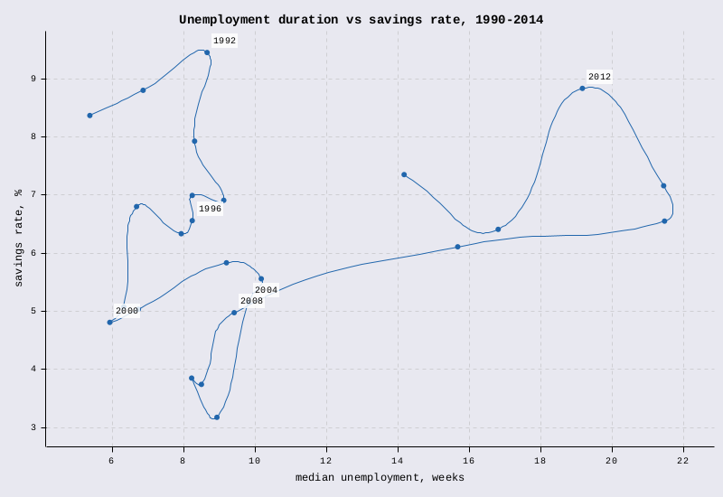
27.6 2D density
Where the points concentrate: counts in cells, a smooth density estimate, its contour lines.
27.6.1 2D histogram and hexbin
chart/bin2d counts points in cells: squares, or hexagons (the default) - regular on screen for the panel’s shape.
Source: R Graph Gallery - 2D density chart; data-to-viz - 2D density (1, 2). Data: Old Faithful geyser eruptions, R datasets package faithful (Härdle 1991; Azzalini & Bowman 1990); licence: Part of R (GPL-2 | GPL-3).
(plot/render-image
(plot/arrange
[{:data faithful :mapping {:x :eruptions :y :waiting} :charts [(chart/bin2d {:cell :square :bins 20})]
:legend false :labels {:title "2D histogram" :x "eruption, min" :y "waiting, min"}}
{:data faithful :mapping {:x :eruptions :y :waiting} :charts [(chart/bin2d {:bins 20})]
:labels {:title "hexbin" :x "eruption, min" :y nil}}]
{:columns 2})
{:width 1000 :height 450})
27.6.2 2D kernel density and contours
chart/field estimates the density (Gaussian kernel, a bandwidth per axis) and draws it as a raster; chart/contour draws its level lines, or with :fill true the bands between them.
Source: R Graph Gallery - 2D density plot with ggplot2. Data: Old Faithful geyser eruptions, R datasets package faithful (Härdle 1991; Azzalini & Bowman 1990); licence: Part of R (GPL-2 | GPL-3).
(plot/render-image
(plot/arrange
[{:data faithful :mapping {:x :eruptions :y :waiting}
:charts [(chart/field) (chart/contour {:color :white :width 0.8})] :legend false
:labels {:title "density raster and contour lines" :x "eruption, min" :y "waiting, min"}}
{:data faithful :mapping {:x :eruptions :y :waiting}
:charts [(chart/contour {:fill true :levels 8})]
:labels {:title "filled contour bands" :x "eruption, min" :y nil}}]
{:columns 2})
{:width 1000 :height 450})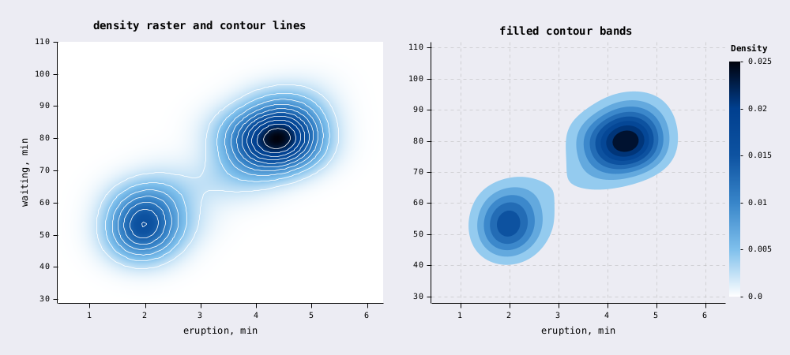
27.6.3 Points over a density
The density as a backdrop for the points themselves.
Source: R Graph Gallery - 2D density chart. Data: Old Faithful geyser eruptions, R datasets package faithful (Härdle 1991; Azzalini & Bowman 1990); licence: Part of R (GPL-2 | GPL-3).
(plot/render-image
{:data faithful :mapping {:x :eruptions :y :waiting}
:charts [(chart/field {:alpha 0.8}) (chart/scatter {:size 3 :color [255 255 255 200]})]
:labels {:title "Old Faithful eruptions over their density" :x "eruption, min" :y "waiting, min"}}
{:width 700 :height 500})
27.7 Functions
chart/field {:f f} samples a function of a point [x y] on a grid over a given domain (:n samples per axis) - no data needed. These examples have no gallery counterpart.
27.7.1 A function as a raster
−(x² + y²) · sin x · sin y · sin xy on [−π, π]², white to black, 300 × 300 samples, square pixels (:aspect :iso).
Source: cljplot2 - chart/field.
(defn fn2d
[[x y]]
(let [x (double x) y (double y)]
(* (- (+ (* x x) (* y y))) (m/sin x) (m/sin y) (m/sin (* x y)))))(plot/render-image
{:charts [(chart/field {:f fn2d :domain {:x [(- m/PI) m/PI] :y [(- m/PI) m/PI]} :n 300})]
:scales {:color {:range [:white :black]}}
:aspect :iso
:labels {:title "-(x^2 + y^2) sin x sin y sin xy"}}
{:width 650 :height 600})
27.7.2 A function with contour lines
sin x · cos y on a diverging palette centred at 0, with contour lines at fixed levels.
Source: cljplot2 - chart/field, chart/contour.
(let [wave (fn [[x y]] (* (m/sin x) (m/cos y)))
domain {:x [0 (* 2 m/PI)] :y [0 4]}]
(plot/render-image
{:charts [(chart/field {:f wave :domain domain})
(chart/contour {:f wave :domain domain :color :black :levels [-0.75 -0.5 -0.25 0 0.25 0.5 0.75]})]
:scales {:color {:range :RColorBrewer/RdBu :midpoint 0 :title "sin x cos y"}}
:labels {:title "sin x cos y with contour lines"}}
{:width 700 :height 450}))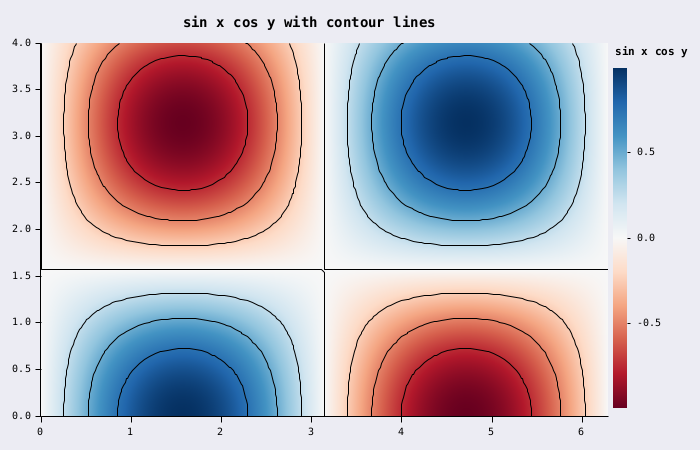
27.8 Overplotting
With thousands of points a scatter plot turns into a blot. The usual ways out, on 53 940 diamonds.
27.8.1 Size, transparency, sampling, binning, facets, margins
Smaller points and transparency let density show; a sample keeps the shape with fewer points; hexagon counts replace points by numbers; facets split the cloud by a category; marginal densities show where it is thick.
Source: data-to-viz - Overplotting. Data: Prices and attributes of round cut diamonds, R ggplot2 package diamonds (Wickham et al.); licence: MIT (ggplot2).
(let [base {:data diamonds :mapping {:x :carat :y :price} :scales {:x {:domain [0 5.5] :nice false :expand [0 0]} :y {:domain [0 20000] :nice false :expand [0 0]}}}
sample (let [rng (r/rng :mersenne 9)] (filterv (fn [_] (< (r/drandom rng) 0.04)) diamonds))]
(plot/render-image
(plot/arrange
[(merge base {:charts [(chart/scatter)] :labels {:title "all points" :x "carat" :y "price, USD"}})
(merge base {:charts [(chart/scatter {:size 1})] :labels {:title "small points" :x "carat" :y nil}})
(merge base {:charts [(chart/scatter {:size 3 :color [30 60 120 12]})] :labels {:title "transparency" :x "carat" :y nil}})
(merge base {:data sample :charts [(chart/scatter {:size 3 :color [30 60 120 120]})]
:labels {:title "4 % sample" :x "carat" :y "price, USD"}})
(merge base {:charts [(chart/bin2d {:bins 30})] :legend false :labels {:title "hexbin" :x "carat" :y nil}})
(merge base {:charts [(chart/scatter {:size 2 :color [30 60 120 20]})]
:margins {:top (chart/density {:fill [30 60 120 100]}) :right (chart/density {:fill [30 60 120 100]})}
:labels {:title "marginal densities" :x "carat" :y nil}})]
{:columns 3})
{:width 1000 :height 700}))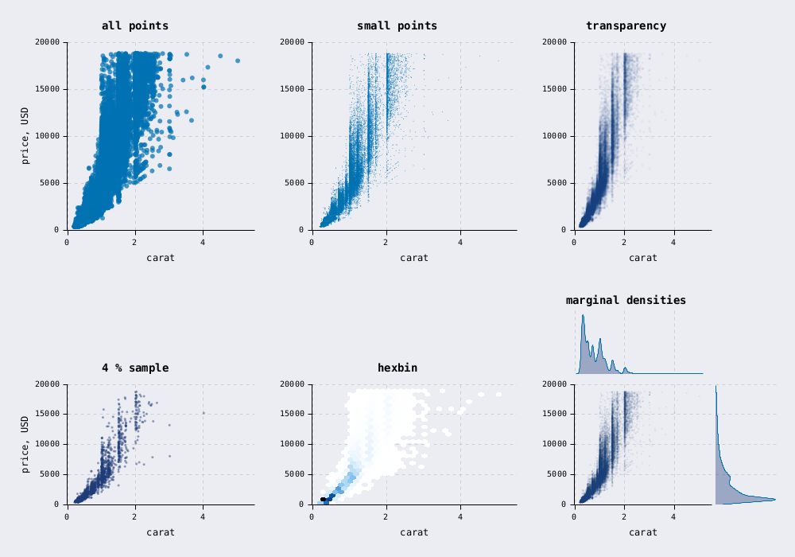
Source: data-to-viz - Overplotting (facets). Data: Prices and attributes of round cut diamonds, R ggplot2 package diamonds (Wickham et al.); licence: MIT (ggplot2).
(plot/render-image
{:data diamonds :mapping {:x :carat :y :price :facet :cut}
:charts [(chart/scatter {:size 2 :color [30 60 120 25]})]
:scales {:facet {:domain ["Fair" "Good" "Very Good" "Premium" "Ideal"]}}
:labels {:title "Diamonds: a panel per cut, worst to best" :x "carat" :y "price, USD"}}
{:width 1000 :height 400})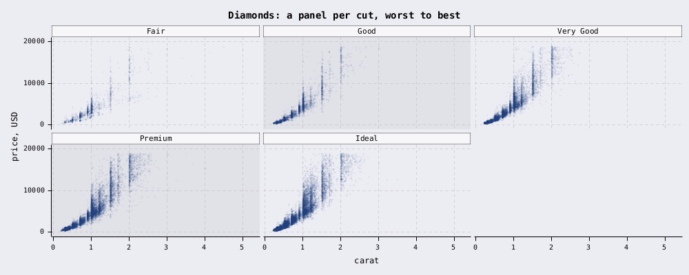
27.8.2 Jitter
Integer values pile up on a few positions; :jitter [dx dy] moves every point by a random offset within ±dx, ±dy (data units) so the piles spread - :rng with a seed makes it the same in every rendering.
Source: data-to-viz - Overplotting (jitter). Data: Motor Trend car road tests (1974), R datasets package mtcars (Henderson & Velleman 1981); licence: Part of R (GPL-2 | GPL-3).
(let [gears (fn [title jitter]
{:data mtcars :mapping {:x :cyl :y :gear}
:charts [(chart/scatter (cond-> {:size 7 :color [40 40 40 120]}
jitter (assoc :jitter jitter :rng (r/rng :mersenne 7))))]
:labels {:title title :x "cylinders" :y "forward gears"}})]
(plot/render-image
(plot/arrange [(gears "32 cars on 8 positions" nil) (gears ":jitter [0.25 0.15]" [0.25 0.15])] {:columns 2})
{:width 900 :height 420}))
27.9 Caveats
27.9.1 Anscombe’s quartet
Four datasets with the same means, variances, linear fit and r ≈ 0.82 - and four different relations: a line, a curve, a line with an outlier, a single far point making the correlation. Always look at the scatter plot. The same mean and spread of x and the same residual variance give the same line and confidence band; drawn over the whole x domain (:full-range with an explicit :domain, shared by the panels) they coincide.
Source: Anscombe (1973), Graphs in Statistical Analysis (R datasets::anscombe).
(def anscombe
"Anscombe's quartet (R `datasets::anscombe`) in long form."
(let [x123 [10 8 13 9 11 14 6 4 12 7 5]
x4 [8 8 8 8 8 8 8 19 8 8 8]
ys {"I" [8.04 6.95 7.58 8.81 8.33 9.96 7.24 4.26 10.84 4.82 5.68]
"II" [9.14 8.14 8.74 8.77 9.26 8.10 6.13 3.10 9.13 7.26 4.74]
"III" [7.46 6.77 12.74 7.11 7.81 8.84 6.08 5.39 8.15 6.42 5.73]
"IV" [6.58 5.76 7.71 8.84 8.47 7.04 5.25 12.50 5.56 7.91 6.89]}]
(vec (for [set ["I" "II" "III" "IV"] [x y] (map vector (if (= "IV" set) x4 x123) (ys set))]
{:set set :x x :y y}))))(let [r-label (fn [rows] (format "r = %.2f" (stats/pearson-correlation (map :x rows) (map :y rows))))]
(plot/render-image
{:data anscombe :mapping {:x :x :y :y :facet :set}
:facets {:columns 4}
:scales {:x {:domain [3 20]}}
:charts [(chart/smooth {:method :lm :full-range true})
(chart/scatter {:size 7 :color [200 60 40]})
(chart/text {:data (vec (for [[set rows] (group-by :set anscombe)] {:set set :x 4 :y 13 :label (r-label rows)}))
:mapping {:x :x :y :y :label :label} :anchor [:left :top]
:background [255 255 255 210] :padding 3})]
:labels {:title "Anscombe's quartet: one r, four relations"}}
{:width 1000 :height 330}))
27.9.2 Other caveats
Correlation is not causation: two variables can move together because a third one drives both.
Pearson’s r measures only a linear relation: very different clouds (Anscombe’s quartet) share one r; look at the scatter plot, and use Spearman or Kendall (
chart/correlation {:method :spearman}) for monotone relations.Bubbles: map the value to the area (
:area true), not the diameter, or large values look far larger.2D histograms and densities depend on the cell size or bandwidth: try a few before reading shapes into them.
source: notebooks/use_cases/correlation.clj